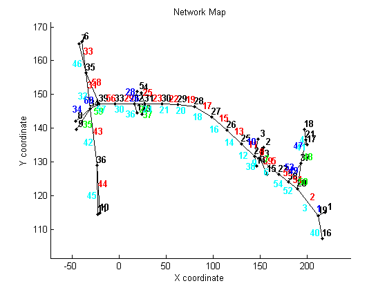
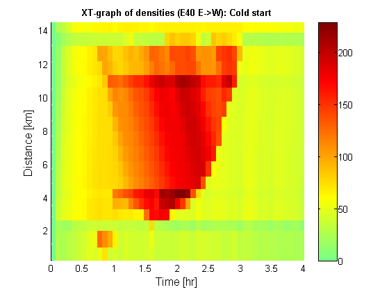
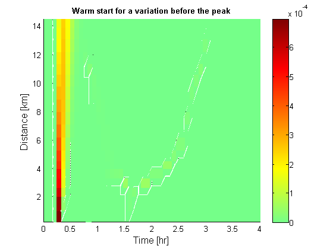
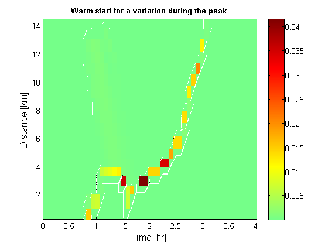
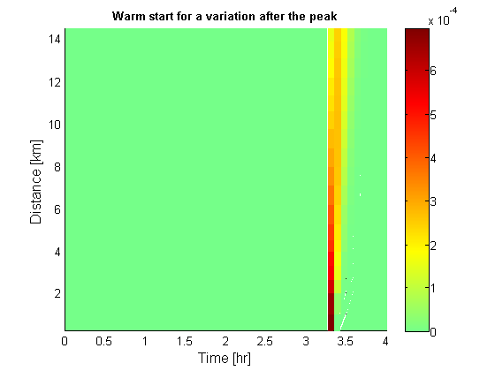

Tutorial 9: Warm starting the implicit scheme of the LTM
Contents
Disclaimer
This file is part of the matlab package for dynamic traffic assignments developed by the KULeuven.
Copyright (C) 2016 Himpe Willem, Leuven, Belgium
This program is free software: you can redistribute it and/or modify it under the terms of the GNU General Public License as published by the Free Software Foundation, either version 3 of the License, or any later version.
This program is distributed in the hope that it will be useful, but WITHOUT ANY WARRANTY; without even the implied warranty of MERCHANTABILITY or FITNESS FOR A PARTICULAR PURPOSE. See the GNU General Public License for more details.
You should have received a copy of the GNU General Public License along with this program. If not, see http://www.gnu.org/licenses/.
More information at: http://www.mech.kuleuven.be/en/cib/traffic/downloads or contact: willem.himpe {@} kuleuven.be
Introduction
This tutorial illustrates the warm starting capabilities of the iterative link transmission scheme. Because the solution is computed iteratively, it has to be initialized. A previous solution that is closer to the new scenarios is computationally less demanding.
%add these folders to the search path addpath('Dynamic Traffic Assignment','Visualization Tools','Network Data') javaclasspath('Dynamic Traffic Assignment'); %clear the work space clear %clear the command window clc %close all windows close all display('<<<Warm starting the implicit scheme of the LTM>>>')
<<<Warm starting the implicit scheme of the LTM>>>
Loading the data
The network represents a simple corridor of network that consists of the interaction of three highways (R0-E40-E314) in the area between Leuven and Brussels in Belgium.
% Network and demand data load net5_old.mat % Plot the network plotNetwork(nodes,links,true,[]);
Setup the simulation (for small and large time intervals)
Before the simulation can be run the time interval has to be set and the total number of time steps has to be defined. These are used to transform the different origin-destination (OD-) matrices into a 3D-matrix. If the time interval is bound by CFL-conditions the iterative link transmission model reduces to an explicit scheme. If the time interval is larger iterations are required to find a consistent dynamic network loading.
%setup the time interval and total number of time steps dt = 5/60; totT = round(4/dt); %build the full ODmatrix [ODmatrix,origins,destinations] = buildODmatrix(ODmatrices,timeSeries,dt,totT);
Computation of the base scenario
First the base scenario is computed with a cold start. The iteration procedure of each time interval is initialized with CVN values of the previous time slice. This assumes that initially no vehicles proceed to the next time interval.
display('Running I-LTM with a cold start') %set faster lookup structures [links,node_prop] = dataParser(links,nodes,origins,destinations,dt); %set turning fractions faster (based on free flow conditions) TF=TF_init(node_prop,links,destinations,dt,totT); %run I-LTM tic [cvn_up_db,cvn_down_db,con_up,con_down] = ILTM_cold_mex(node_prop,links,origins,destinations,ODmatrix,dt,totT,TF); toc %compute the density cvn_up_totb=reshape(sum(cvn_up_db,2),[],totT+1); cvn_down_totb=reshape(sum(cvn_down_db,2),[],totT+1); [simDensity_db] = cvn2dens(cvn_up_totb,cvn_down_totb,totT,links); %visualize the result route = [1,2,51,55,5,8,11,13,15,17,19,22,23,26,29,56,58,33]; plotXT(links,route,simDensity_db,dt,totT); title('XT-graph of densities (E40 E->W): Cold start','FontSize',10,'fontweight','b')
Running I-LTM with a cold start Elapsed time is 0.317492 seconds.
Compute the response of a marginal change
Now a new scenario is computed intialized or warm started with the base scenario. Fewer node updates and iterations are required to find a solution in this case which is beneficial for computation times. First a variation (adding an amount of vehicles to the ODmatrix) is applied before the peak hour. Because the solution is computed in terms of cumulative vehicle numbers such a variation persists until the end of the simulation. Next a variation during the peak hour is applied. Because such a variation alters the congestion pattern. Much more nodes have to be updated thus increasing computation times. Finally a variation is applied after the peak hour. Now the region in space and time that is affected by this change is limited and computational gaines are the largest.
display('Running I-LTM with a warm start for a variation before the peak') %select odt combination and amount of vehicles to add to the ODmatrix o = 1; d = 3; t = 3; val = 1*dt; %activate the changed origin nodes2update = false(length(nodes.id),totT+1); nodes2update(origins(1),:) = true; %update the ODmatrix ODmatrix_t = ODmatrix; ODmatrix_t(o,d,t)=ODmatrix(o,d,t)+val; %run ILTM tic [cvn_up_d,cvn_down_d]=ILTM_warm_mex(node_prop,links,origins,destinations,ODmatrix_t,dt,totT,TF,cvn_up_db,cvn_down_db,con_up,con_down,nodes2update); toc %compute the density cvn_up_tot=reshape(sum(cvn_up_d,2),[],totT+1); cvn_down_tot=reshape(sum(cvn_down_d,2),[],totT+1); [simDensity_d] = cvn2dens(cvn_up_tot,cvn_down_tot,totT,links); %visualize the result plotXT(links,route,abs(simDensity_db-simDensity_d),dt,totT); title('Warm start for a variation before the peak','FontSize',10,'fontweight','b')
Running I-LTM with a warm start for a variation before the peak Elapsed time is 0.107337 seconds.
display('Running I-LTM with a warm start for a variation during the peak') %select odt combination and amount of vehicles to add to the ODmatrix o = 1; d = 3; t = 10; val = 1*dt; %activate the changed origin nodes2update = false(length(nodes.id),totT+1); nodes2update(origins(1),:) = true; %update the ODmatrix ODmatrix_t = ODmatrix; ODmatrix_t(o,d,t)=ODmatrix(o,d,t)+val; %run ILTM tic [cvn_up_d,cvn_down_d]=ILTM_warm_mex(node_prop,links,origins,destinations,ODmatrix_t,dt,totT,TF,cvn_up_db,cvn_down_db,con_up,con_down,nodes2update); toc %compute the density cvn_up_tot=reshape(sum(cvn_up_d,2),[],totT+1); cvn_down_tot=reshape(sum(cvn_down_d,2),[],totT+1); [simDensity_d] = cvn2dens(cvn_up_tot,cvn_down_tot,totT,links); %visualize the result plotXT(links,route,abs(simDensity_db-simDensity_d),dt,totT); title('Warm start for a variation during the peak','FontSize',10,'fontweight','b')
Running I-LTM with a warm start for a variation during the peak Elapsed time is 0.082711 seconds.
display('Running I-LTM with a warm start for a variation after the peak') %select odt combination and amount of vehicles to add to the ODmatrix o = 1; d = 3; t = 40; val = 1*dt; %activate the changed origin nodes2update = false(length(nodes.id),totT+1); nodes2update(origins(1),:) = true; %update the ODmatrix ODmatrix_t = ODmatrix; ODmatrix_t(o,d,t)=ODmatrix(o,d,t)+val; %run ILTM tic [cvn_up_d,cvn_down_d]=ILTM_warm_mex(node_prop,links,origins,destinations,ODmatrix_t,dt,totT,TF,cvn_up_db,cvn_down_db,con_up,con_down,nodes2update); toc %compute the density cvn_up_tot=reshape(sum(cvn_up_d,2),[],totT+1); cvn_down_tot=reshape(sum(cvn_down_d,2),[],totT+1); [simDensity_d] = cvn2dens(cvn_up_tot,cvn_down_tot,totT,links); %visualize the result plotXT(links,route,abs(simDensity_db-simDensity_d),dt,totT); title('Warm start for a variation after the peak','FontSize',10,'fontweight','b')
Running I-LTM with a warm start for a variation after the peak Elapsed time is 0.008133 seconds.